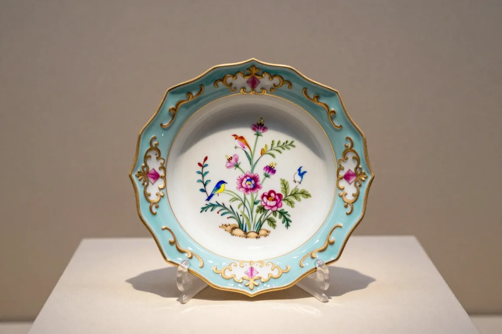

Мягкий фарфор королевской фабрики в Севре. Глянцевый фоновый цвет, такой как bleu céleste или розовый, обрамляет белые резервы с цветами и птицами, с тонкими золочёными краями. Покровителями были Людовик XV и мадам де Помпадур.

Главная идея
Мягкий стекловидный черепок принимает глубокий ровный фоновый цвет, которого не добьётся твёрдый фарфор; затем живописец оставляет белые окна для цветов.
Принципы дизайна
Обжигайте стекловидную мягкую массу со свинцовой глазурью примерно при 1100 °C.
Кладите фоновый цвет, небесно-голубой или розовый, ровным слоем по глазури.
Оставляйте белые резервы формой картуша и пишите в них цветы, птиц или сцены.
Обводите каждый резерв тонким золотым поясом и добавляйте мелкие золотые точки и завитки.
Моделируйте форму кривыми: двойная кривая у борта, ручка-завиток, ножка-раковина.
Ставьте на дно две скрещённые буквы L и букву даты, чтобы каждую вещь можно было датировать.
Оставляйте фигуры в неглазурованном бисквите, с мягкой матовой поверхностью, как мрамор.